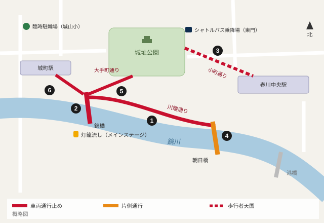

灯籠まつり、6路線で交通規制 来場32万人見込み
第68回春川灯籠まつり（10、11日）の交通規制が決まった。川端通りは両日とも9時間にわたり全面通行止め。会場周辺に駐車場はなく、春川鉄道は両日とも臨時列車10本を運転する。台風の影響は8日に判断する。

第68回春川灯籠まつりが10日（土）と11日（日）、鏡川沿いを中心に開かれる。春川灯籠まつり実行委員会と春川中央警察署は2日、両日の交通規制計画を発表した。規制は6路線に及び、最も長いのは錦橋から朝日橋までの川端通りで、両日とも午後2時から11時まで自転車を含む全車両が通行止めとなる。
実行委員会によると、灯籠の数は昨年の1万1千個から1万2千個に増え、来場者は昨年の30万4千人を上回る約32万人を見込む。プログラムは両日とも同じ。午後4時に約1.3キロの河畔プロムナードに露店が開店し、城址公園、小町通り、川沿いの灯籠は午後5時半から点灯する。午後6時に春川城を出発した灯籠行列は8時半までに錦橋のたもとの川辺へ至る。灯籠流しは午後7時半から9時まで、城町駅近くのメインステージ脇、錦橋下の河川敷階段から行う。終了は午後9時。
どの道路が、いつ規制されるか
城址公園東門から春川中央駅北口までの小町通り（約650メートル）は、両日とも正午から午後10時まで歩行者天国となる。沿道の店舗の荷さばきは午前11時半まで。
錦橋は両日とも午後4時から10時まで車両通行止め。灯籠流しにあわせ、両日とも午後7時から9時までは、橋の上を北から南への一方通行とする。
朝日橋は通行止めにはしないが、午後3時から11時まで北行き1車線に制限する。大手町通りの城址公園南門〜錦橋間は、灯籠行列（午後6時〜8時半）のため両日とも午後5時半から9時まで通行止め。城町駅前の道路も、川口の駅前広場から川端通りまで、午後5時から10時まで車両通行止めとなる。

| 番号 | 道路 | 区間 | 10月10日（土） | 10月11日（日） | 備考 |
|---|---|---|---|---|---|
| 1 | 川端通り | 錦橋〜朝日橋（1.3キロ） | 14:00〜23:00 | 14:00〜23:00 | 自転車を含む全車両通行止め。露店は16時から |
| 2 | 錦橋 | 全線 | 16:00〜22:00 | 16:00〜22:00 | 歩行者専用。灯籠流しの19:00〜21:00は北→南の一方通行 |
| 3 | 小町通り | 城址公園東門〜春川中央駅北口（650メートル） | 12:00〜22:00 | 12:00〜22:00 | 歩行者天国。荷さばきは11:30まで |
| 4 | 朝日橋 | 全線 | 15:00〜23:00 | 15:00〜23:00 | 北行き1車線のみ通行可 |
| 5 | 大手町通り | 城址公園南門〜錦橋 | 17:30〜21:00 | 17:30〜21:00 | 灯籠行列（18:00〜20:30） |
| 6 | 城町駅前 | 駅前広場（川口）〜川端通り | 17:00〜22:00 | 17:00〜22:00 | 18:00〜21:30は駅の入場規制の可能性（春川鉄道） |
市営バス3・5・12系統は両日とも14:00〜23:00に迂回運行。出典：春川灯籠まつり実行委員会、春川中央警察署
市民の皆さんも含め、車での来場は控えてほしい。川沿いは30万人と車を同時に受け止められない。
実行委員長 田辺晴夫さん
駐車場なし、パーク・アンド・ライドを
中心部に臨時駐車場は設けない。警察は、午後2時以降も川端通りに止めてある車はレッカー移動するとしている。代わりに、春川大学北キャンパス駐車場（1,200台）と、みのり港第2駐車場（800台）の2カ所でパーク・アンド・ライドを午後3時から実施する。料金はいずれも1台500円で、同乗者全員のシャトルバス代を含む。シャトルバスは午後3時から10時半まで10分間隔で城址公園東門へ向かう。
自転車は、川沿いから徒歩10分の城山小学校の校庭に臨時駐輪場（1,500台）を設ける。春川中央駅北口の近くには市が車いす観覧エリアを設ける（事前予約制）。
市営バスの3、5、12系統は両日とも午後2時から11時まで川沿いを避けて迂回運行する。市交通局は、夕方以降に中心部を通るほかの路線でも最大30分程度の遅れが出るとみている。
臨時列車は両日10本
春川鉄道は両日とも、土曜・休日ダイヤに加えて臨時列車10本を運転する。いずれも各駅に停車し、駅の時刻表や同社の乗換案内には載っていない。
鏡線は、来場向けに釜野発午後5時20分と6時20分の2本を運転し、春川中央にそれぞれ5時43分、6時43分に着く。帰りは春川中央発午後9時40分の釜野行き（10時3分着）、10時30分の鏡峡行き（11時9分着）、11時25分の釜野行き（11時48分着）の3本で、いずれも春川中央を出た3分後に城町を発車する。湾岸線は春川中央発みのり港行きを午後9時15分、9時45分、10時15分、10時45分、11時30分に運転し、最終はみのり港に11時58分に着く。
両日の春川中央発の定期最終列車は、鏡線が午後10時15分の月見温泉行きと10時50分の釜野行き、湾岸線が11時のみのり港行きと11時35分のみのり公園行き。
最も混雑が予想されるのは、川口からメインステージまで徒歩4分の城町駅だ。春川鉄道は午後6時から9時半まで入場規制を行う場合があり、駅の外で待ってもらうことがあるとしている。城町駅のコインロッカーは午後3時から使えない。特急「月影」21号・24号・25号・28号は両日とも城町駅を通過する。春川中央駅までは川沿いを歩いて約20分で、北口はプロムナードの朝日橋側の端から徒歩5分。
10日から12日までは「月影」に繁忙期料金（200円増し）がかかり、ゆけむりきっぷは使えない。昨年はまつり終了後、春川中央駅の券売機に最大40分の列ができたため、同社は帰りのきっぷの事前購入やハルカへのチャージを呼びかけている。（11月14日からの新ダイヤはまつりには影響しない。）
人流センサーと620人の警備員
昨年は灯籠流しの際に錦橋が約25分にわたって身動きの取れない状態となり、14人が軽いけがで手当てを受けた。このため実行委員会は橋の上の警備員を倍増する。警備員620人と警察官180人が配置につき、春川大学との実証実験として街灯46基に取り付けたセンサーで混雑度をリアルタイムで計測する。会場上空でのドローンの飛行は禁止。
出店はプロムナード沿いの登録済みの飲食・工芸の屋台140店で、午後4時から営業する。登録のない屋台には退去を求める。
台風の影響は
台風21号は5日（月）未明に春川市付近に接近する見込みだ。実行委員会は、すでに川沿いに設置した灯籠4千個を4日午前に撤去し、6〜9日に再設置するとしている。
まつりは台風の5日後。河川敷に被害がなければ予定通り開催できると考えている。
田辺晴夫さん
灯籠流しを含む全行事を予定通り行うかどうかは、8日（木）午後3時に発表する。最新情報はまつり公式サイトと、本紙の台風21号ライブで伝える。


コメント 4
川端通り住民
川端通りに住んでいます。2日連続で9時間も車が出せないのに、住民には何の相談もなかった。せめて救急車がどう入るのかは教えてほしい。
ゆずママ
去年、大学のパーク・アンド・ライドを使いましたがとても快適でした。お城まで10分。おすすめです。
岡田T
台風の後で川の水位が高いままだったら、灯籠流しはどうなるんでしょう。記事に書いてありません。
読者88
去年は灯籠流しの後、城町駅の外で30分並びました。川沿いを20分歩いて春川中央へ行くほうが早いです。